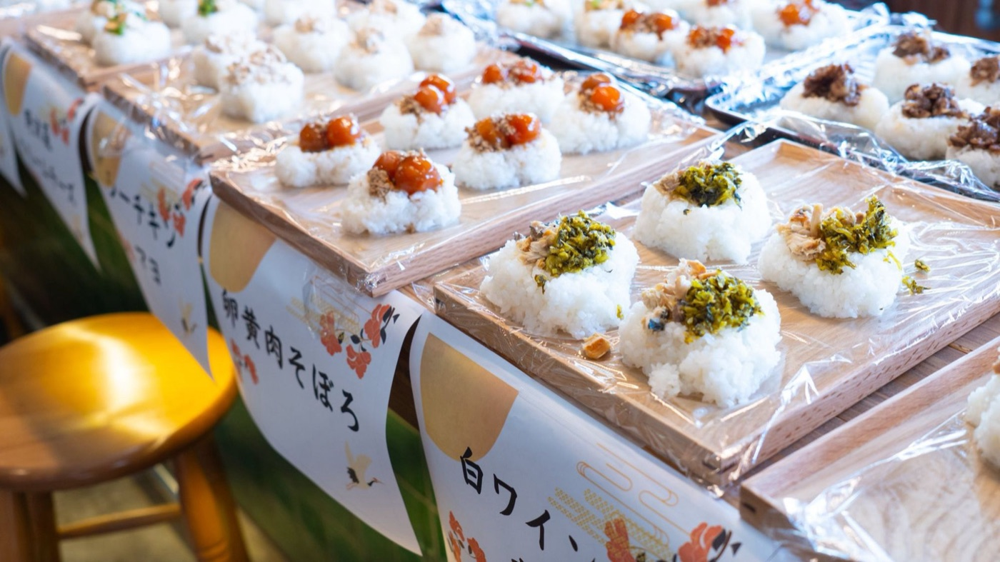

やりたいウォール
参加者全員の顔写真と「やりたい」を1枚の壁に。気になる人を見つけたら、その場で声をかけに行けます。
。途中参加・途中退出OK。
京急蒲田駅から徒歩3分。羽田空港から約10分なので、地方からも来やすい。
セッションを聞くだけでなく、ワークショップ・交流ラウンジ・相談所で自分が動く時間が中心。
すごい実績はいりません。「まだ何者でもない」まま来てください。
NEXY Summit 2027 は「聞く」より「話す・つくる・つながる」が中心です。
参加者全員の顔写真と「やりたい」を1枚の壁に。気になる人を見つけたら、その場で声をかけに行けます。
申し込むと、当日までに自分の紹介ページが作れます。会いたい人を事前に探しておけます。
時間とテーマを決めて、同世代と話す時間。1人で来ても、輪に入りやすい仕組みです。
90分で、自分のやりたいを言葉にして、形にするところまで進める少人数のプログラム。
進路、探究、活動の始め方。先に挑戦している先輩に、1対1で相談できます。
学生団体やプロジェクトが、一緒にやる仲間を探すブース。入りたい場所が見つかるかもしれません。
うまくいった話ではなく、つまずいた話。挑戦する前に一番聞きたかった話を、同世代の登壇者が話します。
NEXYのPodcastを会場で公開収録。客席からの質問も番組の一部になります。
学生が自分の「やりたい」を本気で発表するメインステージ。聞いた後、発表者に直接話しかけに行けます。
当日出会った人と、そのあとも続けられるところまでが NEXY Summit です。
大展示ホールを2つに分けて使います。迷ったら、まずラウンジへ。
オープニング、プレゼン大会、メインセッション、クロージング。
失敗談セッション、公開収録など、登壇者との距離が近いプログラム。
大田区産業プラザPiO 大展示ホール（予定）
2027の登壇者は、高校生から大学2年生まで。少し先を走っている同世代だから、聞いたあとに話しかけに行けます。
「この人の話を聞きたい」を教えてください自薦・他薦どちらも歓迎です。
登壇者を推薦する →登壇者は決まり次第、登録した人から先にお知らせします。
時間の枠は仮です。プログラムの中身は決まり次第ここに入ります。
東京たま未来メッセで開催した第1回。学生だけで企画・運営しました。



※ 数値は確定値のみ掲載しています。
※ 所要時間は目安です。会場は確定後に正式にお知らせします。
学生団体・学生プロジェクトの出展を募集予定です。募集要項は準備中です。
募集開始 準備中ここに申込フォームが入ります（Googleフォームの埋め込み予定）
最新情報を受け取る